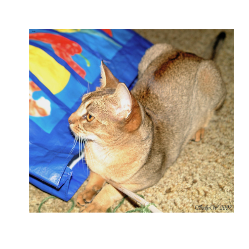
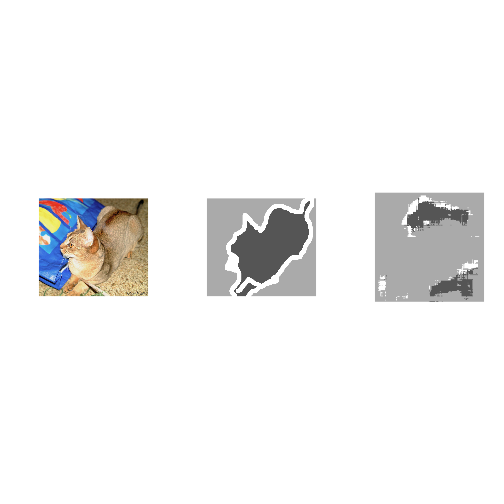

Image segmentation with a U-Net-like architecture
Source:vignettes/examples/vision/oxford_pets_image_segmentation.Rmd
oxford_pets_image_segmentation.RmdDownload the data
options(timeout = 5000)
download.file(
"https://www.robots.ox.ac.uk/~vgg/data/pets/data/images.tar.gz",
"datasets/images.tar.gz"
)
download.file(
"https://www.robots.ox.ac.uk/~vgg/data/pets/data/annotations.tar.gz",
"datasets/annotations.tar.gz"
)
untar("datasets/images.tar.gz", exdir = "datasets")
untar("datasets/annotations.tar.gz", exdir = "datasets")Prepare paths of input images and target segmentation masks
library(keras3)
input_dir <- "datasets/images/"
target_dir <- "datasets/annotations/trimaps/"
img_size <- c(160, 160)
num_classes <- 3
batch_size <- 32
input_img_paths <- fs::dir_ls(input_dir, glob = "*.jpg") |> sort()
target_img_paths <- fs::dir_ls(target_dir, glob = "*.png") |> sort()
cat("Number of samples:", length(input_img_paths), "\n")## Number of samples: 7390
for (i in 1:10) {
cat(input_img_paths[i], "|", target_img_paths[i], "\n")
}## datasets/images/Abyssinian_1.jpg | datasets/annotations/trimaps/Abyssinian_1.png
## datasets/images/Abyssinian_10.jpg | datasets/annotations/trimaps/Abyssinian_10.png
## datasets/images/Abyssinian_100.jpg | datasets/annotations/trimaps/Abyssinian_100.png
## datasets/images/Abyssinian_101.jpg | datasets/annotations/trimaps/Abyssinian_101.png
## datasets/images/Abyssinian_102.jpg | datasets/annotations/trimaps/Abyssinian_102.png
## datasets/images/Abyssinian_103.jpg | datasets/annotations/trimaps/Abyssinian_103.png
## datasets/images/Abyssinian_104.jpg | datasets/annotations/trimaps/Abyssinian_104.png
## datasets/images/Abyssinian_105.jpg | datasets/annotations/trimaps/Abyssinian_105.png
## datasets/images/Abyssinian_106.jpg | datasets/annotations/trimaps/Abyssinian_106.png
## datasets/images/Abyssinian_107.jpg | datasets/annotations/trimaps/Abyssinian_107.pngWhat does one input image and corresponding segmentation mask look like?

plot of chunk unnamed-chunk-4
target_img_paths[10] |>
png::readPNG() |>
magrittr::multiply_by(255)|>
as.raster(max = 3) |>
plot()plot of chunk unnamed-chunk-4
Prepare dataset to load & vectorize batches of data
library(tensorflow, exclude = c("shape", "set_random_seed"))
library(tfdatasets, exclude = "shape")
# Returns a tf_dataset
get_dataset <- function(batch_size, img_size, input_img_paths, target_img_paths,
max_dataset_len = NULL) {
img_size <- as.integer(img_size)
load_img_masks <- function(input_img_path, target_img_path) {
input_img <- input_img_path |>
tf$io$read_file() |>
tf$io$decode_jpeg(channels = 3) |>
tf$image$resize(img_size) |>
tf$image$convert_image_dtype("float32")
target_img <- target_img_path |>
tf$io$read_file() |>
tf$io$decode_png(channels = 1) |>
tf$image$resize(img_size, method = "nearest") |>
tf$image$convert_image_dtype("uint8")
# Ground truth labels are 1, 2, 3. Subtract one to make them 0, 1, 2:
target_img <- target_img - 1L
list(input_img, target_img)
}
if (!is.null(max_dataset_len)) {
input_img_paths <- input_img_paths[1:max_dataset_len]
target_img_paths <- target_img_paths[1:max_dataset_len]
}
list(input_img_paths, target_img_paths) |>
tensor_slices_dataset() |>
dataset_map(load_img_masks, num_parallel_calls = tf$data$AUTOTUNE)|>
dataset_batch(batch_size)
}Prepare U-Net Xception-style model
get_model <- function(img_size, num_classes) {
inputs <- keras_input(shape = c(img_size, 3))
### [First half of the network: downsampling inputs] ###
# Entry block
x <- inputs |>
layer_conv_2d(filters = 32, kernel_size = 3, strides = 2, padding = "same") |>
layer_batch_normalization() |>
layer_activation("relu")
previous_block_activation <- x # Set aside residual
for (filters in c(64, 128, 256)) {
x <- x |>
layer_activation("relu") |>
layer_separable_conv_2d(filters = filters, kernel_size = 3, padding = "same") |>
layer_batch_normalization() |>
layer_activation("relu") |>
layer_separable_conv_2d(filters = filters, kernel_size = 3, padding = "same") |>
layer_batch_normalization() |>
layer_max_pooling_2d(pool_size = 3, strides = 2, padding = "same")
residual <- previous_block_activation |>
layer_conv_2d(filters = filters, kernel_size = 1, strides = 2, padding = "same")
x <- layer_add(x, residual) # Add back residual
previous_block_activation <- x # Set aside next residual
}
### [Second half of the network: upsampling inputs] ###
for (filters in c(256, 128, 64, 32)) {
x <- x |>
layer_activation("relu") |>
layer_conv_2d_transpose(filters = filters, kernel_size = 3, padding = "same") |>
layer_batch_normalization() |>
layer_activation("relu") |>
layer_conv_2d_transpose(filters = filters, kernel_size = 3, padding = "same") |>
layer_batch_normalization() |>
layer_upsampling_2d(size = 2)
# Project residual
residual <- previous_block_activation |>
layer_upsampling_2d(size = 2) |>
layer_conv_2d(filters = filters, kernel_size = 1, padding = "same")
x <- layer_add(x, residual) # Add back residual
previous_block_activation <- x # Set aside next residual
}
# Add a per-pixel classification layer
outputs <- x |>
layer_conv_2d(num_classes, 3, activation = "softmax", padding = "same")
# Define the model
keras_model(inputs, outputs)
}
# Build model
model <- get_model(img_size, num_classes)
summary(model)## Model: "functional"
## ┏━━━━━━━━━━━━━━━━━━━┳━━━━━━━━━━━━━━━━━┳━━━━━━━━━━━┳━━━━━━━━━━━━━━━━┳━━━━━━━┓
## ┃ Layer (type) ┃ Output Shape ┃ Param # ┃ Connected to ┃ Trai… ┃
## ┡━━━━━━━━━━━━━━━━━━━╇━━━━━━━━━━━━━━━━━╇━━━━━━━━━━━╇━━━━━━━━━━━━━━━━╇━━━━━━━┩
## │ input_layer │ (None, 160, │ 0 │ - │ - │
## │ (InputLayer) │ 160, 3) │ │ │ │
## ├───────────────────┼─────────────────┼───────────┼────────────────┼───────┤
## │ conv2d (Conv2D) │ (None, 80, 80, │ 896 │ input_layer[0… │ Y │
## │ │ 32) │ │ │ │
## ├───────────────────┼─────────────────┼───────────┼────────────────┼───────┤
## │ batch_normalizat… │ (None, 80, 80, │ 128 │ conv2d[0][0] │ Y │
## │ (BatchNormalizat… │ 32) │ │ │ │
## ├───────────────────┼─────────────────┼───────────┼────────────────┼───────┤
## │ activation │ (None, 80, 80, │ 0 │ batch_normali… │ - │
## │ (Activation) │ 32) │ │ │ │
## ├───────────────────┼─────────────────┼───────────┼────────────────┼───────┤
## │ activation_1 │ (None, 80, 80, │ 0 │ activation[0]… │ - │
## │ (Activation) │ 32) │ │ │ │
## ├───────────────────┼─────────────────┼───────────┼────────────────┼───────┤
## │ separable_conv2d │ (None, 80, 80, │ 2,400 │ activation_1[… │ Y │
## │ (SeparableConv2D) │ 64) │ │ │ │
## ├───────────────────┼─────────────────┼───────────┼────────────────┼───────┤
## │ batch_normalizat… │ (None, 80, 80, │ 256 │ separable_con… │ Y │
## │ (BatchNormalizat… │ 64) │ │ │ │
## ├───────────────────┼─────────────────┼───────────┼────────────────┼───────┤
## │ activation_2 │ (None, 80, 80, │ 0 │ batch_normali… │ - │
## │ (Activation) │ 64) │ │ │ │
## ├───────────────────┼─────────────────┼───────────┼────────────────┼───────┤
## │ separable_conv2d… │ (None, 80, 80, │ 4,736 │ activation_2[… │ Y │
## │ (SeparableConv2D) │ 64) │ │ │ │
## ├───────────────────┼─────────────────┼───────────┼────────────────┼───────┤
## │ batch_normalizat… │ (None, 80, 80, │ 256 │ separable_con… │ Y │
## │ (BatchNormalizat… │ 64) │ │ │ │
## ├───────────────────┼─────────────────┼───────────┼────────────────┼───────┤
## │ max_pooling2d │ (None, 40, 40, │ 0 │ batch_normali… │ - │
## │ (MaxPooling2D) │ 64) │ │ │ │
## ├───────────────────┼─────────────────┼───────────┼────────────────┼───────┤
## │ conv2d_1 (Conv2D) │ (None, 40, 40, │ 2,112 │ activation[0]… │ Y │
## │ │ 64) │ │ │ │
## ├───────────────────┼─────────────────┼───────────┼────────────────┼───────┤
## │ add (Add) │ (None, 40, 40, │ 0 │ max_pooling2d… │ - │
## │ │ 64) │ │ conv2d_1[0][0] │ │
## ├───────────────────┼─────────────────┼───────────┼────────────────┼───────┤
## │ activation_3 │ (None, 40, 40, │ 0 │ add[0][0] │ - │
## │ (Activation) │ 64) │ │ │ │
## ├───────────────────┼─────────────────┼───────────┼────────────────┼───────┤
## │ separable_conv2d… │ (None, 40, 40, │ 8,896 │ activation_3[… │ Y │
## │ (SeparableConv2D) │ 128) │ │ │ │
## ├───────────────────┼─────────────────┼───────────┼────────────────┼───────┤
## │ batch_normalizat… │ (None, 40, 40, │ 512 │ separable_con… │ Y │
## │ (BatchNormalizat… │ 128) │ │ │ │
## ├───────────────────┼─────────────────┼───────────┼────────────────┼───────┤
## │ activation_4 │ (None, 40, 40, │ 0 │ batch_normali… │ - │
## │ (Activation) │ 128) │ │ │ │
## ├───────────────────┼─────────────────┼───────────┼────────────────┼───────┤
## │ separable_conv2d… │ (None, 40, 40, │ 17,664 │ activation_4[… │ Y │
## │ (SeparableConv2D) │ 128) │ │ │ │
## ├───────────────────┼─────────────────┼───────────┼────────────────┼───────┤
## │ batch_normalizat… │ (None, 40, 40, │ 512 │ separable_con… │ Y │
## │ (BatchNormalizat… │ 128) │ │ │ │
## ├───────────────────┼─────────────────┼───────────┼────────────────┼───────┤
## │ max_pooling2d_1 │ (None, 20, 20, │ 0 │ batch_normali… │ - │
## │ (MaxPooling2D) │ 128) │ │ │ │
## ├───────────────────┼─────────────────┼───────────┼────────────────┼───────┤
## │ conv2d_2 (Conv2D) │ (None, 20, 20, │ 8,320 │ add[0][0] │ Y │
## │ │ 128) │ │ │ │
## ├───────────────────┼─────────────────┼───────────┼────────────────┼───────┤
## │ add_1 (Add) │ (None, 20, 20, │ 0 │ max_pooling2d… │ - │
## │ │ 128) │ │ conv2d_2[0][0] │ │
## ├───────────────────┼─────────────────┼───────────┼────────────────┼───────┤
## │ activation_5 │ (None, 20, 20, │ 0 │ add_1[0][0] │ - │
## │ (Activation) │ 128) │ │ │ │
## ├───────────────────┼─────────────────┼───────────┼────────────────┼───────┤
## │ separable_conv2d… │ (None, 20, 20, │ 34,176 │ activation_5[… │ Y │
## │ (SeparableConv2D) │ 256) │ │ │ │
## ├───────────────────┼─────────────────┼───────────┼────────────────┼───────┤
## │ batch_normalizat… │ (None, 20, 20, │ 1,024 │ separable_con… │ Y │
## │ (BatchNormalizat… │ 256) │ │ │ │
## ├───────────────────┼─────────────────┼───────────┼────────────────┼───────┤
## │ activation_6 │ (None, 20, 20, │ 0 │ batch_normali… │ - │
## │ (Activation) │ 256) │ │ │ │
## ├───────────────────┼─────────────────┼───────────┼────────────────┼───────┤
## │ separable_conv2d… │ (None, 20, 20, │ 68,096 │ activation_6[… │ Y │
## │ (SeparableConv2D) │ 256) │ │ │ │
## ├───────────────────┼─────────────────┼───────────┼────────────────┼───────┤
## │ batch_normalizat… │ (None, 20, 20, │ 1,024 │ separable_con… │ Y │
## │ (BatchNormalizat… │ 256) │ │ │ │
## ├───────────────────┼─────────────────┼───────────┼────────────────┼───────┤
## │ max_pooling2d_2 │ (None, 10, 10, │ 0 │ batch_normali… │ - │
## │ (MaxPooling2D) │ 256) │ │ │ │
## ├───────────────────┼─────────────────┼───────────┼────────────────┼───────┤
## │ conv2d_3 (Conv2D) │ (None, 10, 10, │ 33,024 │ add_1[0][0] │ Y │
## │ │ 256) │ │ │ │
## ├───────────────────┼─────────────────┼───────────┼────────────────┼───────┤
## │ add_2 (Add) │ (None, 10, 10, │ 0 │ max_pooling2d… │ - │
## │ │ 256) │ │ conv2d_3[0][0] │ │
## ├───────────────────┼─────────────────┼───────────┼────────────────┼───────┤
## │ activation_7 │ (None, 10, 10, │ 0 │ add_2[0][0] │ - │
## │ (Activation) │ 256) │ │ │ │
## ├───────────────────┼─────────────────┼───────────┼────────────────┼───────┤
## │ conv2d_transpose │ (None, 10, 10, │ 590,080 │ activation_7[… │ Y │
## │ (Conv2DTranspose) │ 256) │ │ │ │
## ├───────────────────┼─────────────────┼───────────┼────────────────┼───────┤
## │ batch_normalizat… │ (None, 10, 10, │ 1,024 │ conv2d_transp… │ Y │
## │ (BatchNormalizat… │ 256) │ │ │ │
## ├───────────────────┼─────────────────┼───────────┼────────────────┼───────┤
## │ activation_8 │ (None, 10, 10, │ 0 │ batch_normali… │ - │
## │ (Activation) │ 256) │ │ │ │
## ├───────────────────┼─────────────────┼───────────┼────────────────┼───────┤
## │ conv2d_transpose… │ (None, 10, 10, │ 590,080 │ activation_8[… │ Y │
## │ (Conv2DTranspose) │ 256) │ │ │ │
## ├───────────────────┼─────────────────┼───────────┼────────────────┼───────┤
## │ batch_normalizat… │ (None, 10, 10, │ 1,024 │ conv2d_transp… │ Y │
## │ (BatchNormalizat… │ 256) │ │ │ │
## ├───────────────────┼─────────────────┼───────────┼────────────────┼───────┤
## │ up_sampling2d_1 │ (None, 20, 20, │ 0 │ add_2[0][0] │ - │
## │ (UpSampling2D) │ 256) │ │ │ │
## ├───────────────────┼─────────────────┼───────────┼────────────────┼───────┤
## │ up_sampling2d │ (None, 20, 20, │ 0 │ batch_normali… │ - │
## │ (UpSampling2D) │ 256) │ │ │ │
## ├───────────────────┼─────────────────┼───────────┼────────────────┼───────┤
## │ conv2d_4 (Conv2D) │ (None, 20, 20, │ 65,792 │ up_sampling2d… │ Y │
## │ │ 256) │ │ │ │
## ├───────────────────┼─────────────────┼───────────┼────────────────┼───────┤
## │ add_3 (Add) │ (None, 20, 20, │ 0 │ up_sampling2d… │ - │
## │ │ 256) │ │ conv2d_4[0][0] │ │
## ├───────────────────┼─────────────────┼───────────┼────────────────┼───────┤
## │ activation_9 │ (None, 20, 20, │ 0 │ add_3[0][0] │ - │
## │ (Activation) │ 256) │ │ │ │
## ├───────────────────┼─────────────────┼───────────┼────────────────┼───────┤
## │ conv2d_transpose… │ (None, 20, 20, │ 295,040 │ activation_9[… │ Y │
## │ (Conv2DTranspose) │ 128) │ │ │ │
## ├───────────────────┼─────────────────┼───────────┼────────────────┼───────┤
## │ batch_normalizat… │ (None, 20, 20, │ 512 │ conv2d_transp… │ Y │
## │ (BatchNormalizat… │ 128) │ │ │ │
## ├───────────────────┼─────────────────┼───────────┼────────────────┼───────┤
## │ activation_10 │ (None, 20, 20, │ 0 │ batch_normali… │ - │
## │ (Activation) │ 128) │ │ │ │
## ├───────────────────┼─────────────────┼───────────┼────────────────┼───────┤
## │ conv2d_transpose… │ (None, 20, 20, │ 147,584 │ activation_10… │ Y │
## │ (Conv2DTranspose) │ 128) │ │ │ │
## ├───────────────────┼─────────────────┼───────────┼────────────────┼───────┤
## │ batch_normalizat… │ (None, 20, 20, │ 512 │ conv2d_transp… │ Y │
## │ (BatchNormalizat… │ 128) │ │ │ │
## ├───────────────────┼─────────────────┼───────────┼────────────────┼───────┤
## │ up_sampling2d_3 │ (None, 40, 40, │ 0 │ add_3[0][0] │ - │
## │ (UpSampling2D) │ 256) │ │ │ │
## ├───────────────────┼─────────────────┼───────────┼────────────────┼───────┤
## │ up_sampling2d_2 │ (None, 40, 40, │ 0 │ batch_normali… │ - │
## │ (UpSampling2D) │ 128) │ │ │ │
## ├───────────────────┼─────────────────┼───────────┼────────────────┼───────┤
## │ conv2d_5 (Conv2D) │ (None, 40, 40, │ 32,896 │ up_sampling2d… │ Y │
## │ │ 128) │ │ │ │
## ├───────────────────┼─────────────────┼───────────┼────────────────┼───────┤
## │ add_4 (Add) │ (None, 40, 40, │ 0 │ up_sampling2d… │ - │
## │ │ 128) │ │ conv2d_5[0][0] │ │
## ├───────────────────┼─────────────────┼───────────┼────────────────┼───────┤
## │ activation_11 │ (None, 40, 40, │ 0 │ add_4[0][0] │ - │
## │ (Activation) │ 128) │ │ │ │
## ├───────────────────┼─────────────────┼───────────┼────────────────┼───────┤
## │ conv2d_transpose… │ (None, 40, 40, │ 73,792 │ activation_11… │ Y │
## │ (Conv2DTranspose) │ 64) │ │ │ │
## ├───────────────────┼─────────────────┼───────────┼────────────────┼───────┤
## │ batch_normalizat… │ (None, 40, 40, │ 256 │ conv2d_transp… │ Y │
## │ (BatchNormalizat… │ 64) │ │ │ │
## ├───────────────────┼─────────────────┼───────────┼────────────────┼───────┤
## │ activation_12 │ (None, 40, 40, │ 0 │ batch_normali… │ - │
## │ (Activation) │ 64) │ │ │ │
## ├───────────────────┼─────────────────┼───────────┼────────────────┼───────┤
## │ conv2d_transpose… │ (None, 40, 40, │ 36,928 │ activation_12… │ Y │
## │ (Conv2DTranspose) │ 64) │ │ │ │
## ├───────────────────┼─────────────────┼───────────┼────────────────┼───────┤
## │ batch_normalizat… │ (None, 40, 40, │ 256 │ conv2d_transp… │ Y │
## │ (BatchNormalizat… │ 64) │ │ │ │
## ├───────────────────┼─────────────────┼───────────┼────────────────┼───────┤
## │ up_sampling2d_5 │ (None, 80, 80, │ 0 │ add_4[0][0] │ - │
## │ (UpSampling2D) │ 128) │ │ │ │
## ├───────────────────┼─────────────────┼───────────┼────────────────┼───────┤
## │ up_sampling2d_4 │ (None, 80, 80, │ 0 │ batch_normali… │ - │
## │ (UpSampling2D) │ 64) │ │ │ │
## ├───────────────────┼─────────────────┼───────────┼────────────────┼───────┤
## │ conv2d_6 (Conv2D) │ (None, 80, 80, │ 8,256 │ up_sampling2d… │ Y │
## │ │ 64) │ │ │ │
## ├───────────────────┼─────────────────┼───────────┼────────────────┼───────┤
## │ add_5 (Add) │ (None, 80, 80, │ 0 │ up_sampling2d… │ - │
## │ │ 64) │ │ conv2d_6[0][0] │ │
## ├───────────────────┼─────────────────┼───────────┼────────────────┼───────┤
## │ activation_13 │ (None, 80, 80, │ 0 │ add_5[0][0] │ - │
## │ (Activation) │ 64) │ │ │ │
## ├───────────────────┼─────────────────┼───────────┼────────────────┼───────┤
## │ conv2d_transpose… │ (None, 80, 80, │ 18,464 │ activation_13… │ Y │
## │ (Conv2DTranspose) │ 32) │ │ │ │
## ├───────────────────┼─────────────────┼───────────┼────────────────┼───────┤
## │ batch_normalizat… │ (None, 80, 80, │ 128 │ conv2d_transp… │ Y │
## │ (BatchNormalizat… │ 32) │ │ │ │
## ├───────────────────┼─────────────────┼───────────┼────────────────┼───────┤
## │ activation_14 │ (None, 80, 80, │ 0 │ batch_normali… │ - │
## │ (Activation) │ 32) │ │ │ │
## ├───────────────────┼─────────────────┼───────────┼────────────────┼───────┤
## │ conv2d_transpose… │ (None, 80, 80, │ 9,248 │ activation_14… │ Y │
## │ (Conv2DTranspose) │ 32) │ │ │ │
## ├───────────────────┼─────────────────┼───────────┼────────────────┼───────┤
## │ batch_normalizat… │ (None, 80, 80, │ 128 │ conv2d_transp… │ Y │
## │ (BatchNormalizat… │ 32) │ │ │ │
## ├───────────────────┼─────────────────┼───────────┼────────────────┼───────┤
## │ up_sampling2d_7 │ (None, 160, │ 0 │ add_5[0][0] │ - │
## │ (UpSampling2D) │ 160, 64) │ │ │ │
## ├───────────────────┼─────────────────┼───────────┼────────────────┼───────┤
## │ up_sampling2d_6 │ (None, 160, │ 0 │ batch_normali… │ - │
## │ (UpSampling2D) │ 160, 32) │ │ │ │
## ├───────────────────┼─────────────────┼───────────┼────────────────┼───────┤
## │ conv2d_7 (Conv2D) │ (None, 160, │ 2,080 │ up_sampling2d… │ Y │
## │ │ 160, 32) │ │ │ │
## ├───────────────────┼─────────────────┼───────────┼────────────────┼───────┤
## │ add_6 (Add) │ (None, 160, │ 0 │ up_sampling2d… │ - │
## │ │ 160, 32) │ │ conv2d_7[0][0] │ │
## ├───────────────────┼─────────────────┼───────────┼────────────────┼───────┤
## │ conv2d_8 (Conv2D) │ (None, 160, │ 867 │ add_6[0][0] │ Y │
## │ │ 160, 3) │ │ │ │
## └───────────────────┴─────────────────┴───────────┴────────────────┴───────┘
## Total params: 2,058,979 (7.85 MB)
## Trainable params: 2,055,203 (7.84 MB)
## Non-trainable params: 3,776 (14.75 KB)Set aside a validation split
# Split our img paths into a training and a validation set
val_samples <- 1000
val_samples <- sample.int(length(input_img_paths), val_samples)
train_input_img_paths <- input_img_paths[-val_samples]
train_target_img_paths <- target_img_paths[-val_samples]
val_input_img_paths <- input_img_paths[val_samples]
val_target_img_paths <- target_img_paths[val_samples]
# Instantiate dataset for each split
# Limit input files in `max_dataset_len` for faster epoch training time.
# Remove the `max_dataset_len` arg when running with full dataset.
train_dataset <- get_dataset(
batch_size,
img_size,
train_input_img_paths,
train_target_img_paths,
max_dataset_len = 1000
)
valid_dataset <- get_dataset(
batch_size, img_size, val_input_img_paths, val_target_img_paths
)Train the model
# Configure the model for training.
# We use the "sparse" version of categorical_crossentropy
# because our target data is integers.
model |> compile(
optimizer = optimizer_adam(1e-4),
loss = "sparse_categorical_crossentropy"
)
callbacks <- list(
callback_model_checkpoint(
"models/oxford_segmentation.keras", save_best_only = TRUE
)
)
# Train the model, doing validation at the end of each epoch.
epochs <- 50
model |> fit(
train_dataset,
epochs=epochs,
validation_data=valid_dataset,
callbacks=callbacks,
verbose=2
)## Epoch 1/50
## 32/32 - 52s - 2s/step - loss: 1.4283 - val_loss: 1.5509
## Epoch 2/50
## 32/32 - 2s - 63ms/step - loss: 0.9222 - val_loss: 1.9912
## Epoch 3/50
## 32/32 - 2s - 63ms/step - loss: 0.7764 - val_loss: 2.5146
## Epoch 4/50
## 32/32 - 2s - 64ms/step - loss: 0.7200 - val_loss: 3.0180
## Epoch 5/50
## 32/32 - 2s - 66ms/step - loss: 0.6848 - val_loss: 3.2942
## Epoch 6/50
## 32/32 - 2s - 64ms/step - loss: 0.6556 - val_loss: 3.4531
## Epoch 7/50
## 32/32 - 2s - 64ms/step - loss: 0.6302 - val_loss: 3.5640
## Epoch 8/50
## 32/32 - 2s - 66ms/step - loss: 0.6082 - val_loss: 3.6565
## Epoch 9/50
## 32/32 - 2s - 63ms/step - loss: 0.5894 - val_loss: 3.7383
## Epoch 10/50
## 32/32 - 2s - 64ms/step - loss: 0.5726 - val_loss: 3.7990
## Epoch 11/50
## 32/32 - 2s - 63ms/step - loss: 0.5567 - val_loss: 3.8275
## Epoch 12/50
## 32/32 - 2s - 64ms/step - loss: 0.5407 - val_loss: 3.8096
## Epoch 13/50
## 32/32 - 2s - 64ms/step - loss: 0.5242 - val_loss: 3.7266
## Epoch 14/50
## 32/32 - 2s - 63ms/step - loss: 0.5061 - val_loss: 3.5912
## Epoch 15/50
## 32/32 - 2s - 64ms/step - loss: 0.4860 - val_loss: 3.4425
## Epoch 16/50
## 32/32 - 2s - 64ms/step - loss: 0.4637 - val_loss: 3.2614
## Epoch 17/50
## 32/32 - 2s - 65ms/step - loss: 0.4395 - val_loss: 3.0068
## Epoch 18/50
## 32/32 - 2s - 65ms/step - loss: 0.4140 - val_loss: 2.7002
## Epoch 19/50
## 32/32 - 2s - 65ms/step - loss: 0.3877 - val_loss: 2.3620
## Epoch 20/50
## 32/32 - 2s - 64ms/step - loss: 0.3623 - val_loss: 1.9693
## Epoch 21/50
## 32/32 - 2s - 65ms/step - loss: 0.3394 - val_loss: 1.6245
## Epoch 22/50
## 32/32 - 2s - 70ms/step - loss: 0.3206 - val_loss: 1.3355
## Epoch 23/50
## 32/32 - 2s - 70ms/step - loss: 0.3088 - val_loss: 1.0879
## Epoch 24/50
## 32/32 - 2s - 70ms/step - loss: 0.3099 - val_loss: 1.0087
## Epoch 25/50
## 32/32 - 2s - 70ms/step - loss: 0.3457 - val_loss: 0.9224
## Epoch 26/50
## 32/32 - 2s - 66ms/step - loss: 0.3616 - val_loss: 0.9920
## Epoch 27/50
## 32/32 - 2s - 70ms/step - loss: 0.3274 - val_loss: 0.8655
## Epoch 28/50
## 32/32 - 2s - 64ms/step - loss: 0.2877 - val_loss: 1.0053
## Epoch 29/50
## 32/32 - 2s - 65ms/step - loss: 0.2723 - val_loss: 1.1676
## Epoch 30/50
## 32/32 - 2s - 64ms/step - loss: 0.2674 - val_loss: 1.1715
## Epoch 31/50
## 32/32 - 2s - 65ms/step - loss: 0.2711 - val_loss: 1.1270
## Epoch 32/50
## 32/32 - 2s - 64ms/step - loss: 0.2863 - val_loss: 1.0981
## Epoch 33/50
## 32/32 - 2s - 64ms/step - loss: 0.3134 - val_loss: 1.3052
## Epoch 34/50
## 32/32 - 2s - 65ms/step - loss: 0.3023 - val_loss: 1.2297
## Epoch 35/50
## 32/32 - 2s - 63ms/step - loss: 0.2865 - val_loss: 1.0519
## Epoch 36/50
## 32/32 - 2s - 63ms/step - loss: 0.2780 - val_loss: 1.0583
## Epoch 37/50
## 32/32 - 2s - 64ms/step - loss: 0.2753 - val_loss: 1.4331
## Epoch 38/50
## 32/32 - 2s - 63ms/step - loss: 0.2621 - val_loss: 1.0368
## Epoch 39/50
## 32/32 - 2s - 64ms/step - loss: 0.2452 - val_loss: 1.2070
## Epoch 40/50
## 32/32 - 2s - 63ms/step - loss: 0.2453 - val_loss: 1.1398
## Epoch 41/50
## 32/32 - 2s - 63ms/step - loss: 0.2441 - val_loss: 1.3137
## Epoch 42/50
## 32/32 - 2s - 64ms/step - loss: 0.2325 - val_loss: 1.5579
## Epoch 43/50
## 32/32 - 2s - 64ms/step - loss: 0.2308 - val_loss: 1.3443
## Epoch 44/50
## 32/32 - 2s - 64ms/step - loss: 0.2233 - val_loss: 1.1775
## Epoch 45/50
## 32/32 - 2s - 66ms/step - loss: 0.2185 - val_loss: 1.0717
## Epoch 46/50
## 32/32 - 2s - 65ms/step - loss: 0.2134 - val_loss: 1.0930
## Epoch 47/50
## 32/32 - 2s - 64ms/step - loss: 0.2086 - val_loss: 1.0628
## Epoch 48/50
## 32/32 - 2s - 65ms/step - loss: 0.2033 - val_loss: 1.0839
## Epoch 49/50
## 32/32 - 2s - 64ms/step - loss: 0.1947 - val_loss: 1.0492
## Epoch 50/50
## 32/32 - 2s - 65ms/step - loss: 0.1843 - val_loss: 1.1251Visualize predictions
model <- load_model("models/oxford_segmentation.keras")
# Generate predictions for all images in the validation set
val_dataset <- get_dataset(
batch_size, img_size, val_input_img_paths, val_target_img_paths
)
val_preds <- predict(model, val_dataset)## 32/32 - 4s - 110ms/step
display_mask <- function(i) {
# Quick utility to display a model's prediction.
mask <- val_preds[i,,,] %>%
apply(c(1,2), which.max) %>%
array_reshape(dim = c(img_size, 1))
mask <- abind::abind(mask, mask, mask, along = 3)
plot(as.raster(mask, max = 3))
}
# Display results for validation image #10
i <- 10
par(mfrow = c(1, 3))
# Display input image
input_img_paths[i] |>
jpeg::readJPEG() |>
as.raster() |>
plot()
# Display ground-truth target mask
target_img_paths[i] |>
png::readPNG() |>
magrittr::multiply_by(255)|>
as.raster(max = 3) |>
plot()
# Display mask predicted by our model
display_mask(i) # Note that the model only sees inputs at 150x150.
plot of chunk unnamed-chunk-9